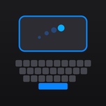

Jailbroken iOS 8 to 10, 32-bit devices (armv7). Tested on an iPad 3 running iOS 8.4.1.
Open source: github.com/douugr/paddeck
MIT license. Traffic on Wi-Fi is not encrypted: use it on a network you trust.
No ROMs or third-party content are included.